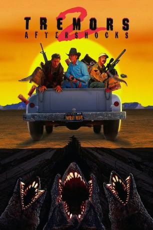

#2952 Tremors 2 - Die Rückkehr der Raketenwürmer
Alternativ: Tremors II: Aftershocks
 
 IMDB-Wertung: 6.0 / 10
IMDB-Wertung: 6.0 / 10  Metascore: 0
Metascore: 0 
US-amerikanische Mischung aus Horrorfilm und Komödie von S. S. Wilson. Nach dem ersten Teil (1990) tauchen die Killerwürmer erneut auf - und können dieses Mal sogar laufen! Earl basset (Fred Ward) trommelt ein paar Kumpel und eine Wissenschaftlerin zusammen und macht sich auf die Jagd.
Jahr: 1996
Dauer: 99 Minuten
FSK: 16
Land: USA Studio: MCA Home EntertainmentTonspuren: DTS - ,
Untertitel: Deutsch,
Auflösung: 1080p (1920x1040) Größe: 6707 MB
Genre: Action, Thriller, Horror, Sci-Fi, Komödie
Regisseur: S.S. Wilson
Drehbuch: Brent Maddock, S.S. Wilson, Ron Underwood, Brent Maddock, S.S. Wilson
Soundtrack: Jay Ferguson
Darsteller:
Datei: X:\6-Hexalogie(A-Z)\Tremors\Tremors 2 - Die Rückkehr der Raketenwürmer (1996, FSK16, 1920x1040).mkv seit 06.01.2016
Festplatte: HD Collection-3(N-Z)-6(A-Z)
 Es gibt insgesamt 9 Filme in der Gruppe '6-Hexalogie(A-Z)\Tremors'
Es gibt insgesamt 9 Filme in der Gruppe '6-Hexalogie(A-Z)\Tremors'